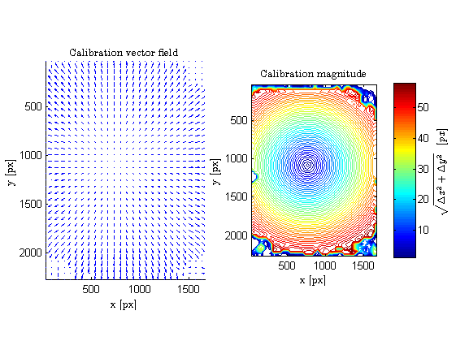
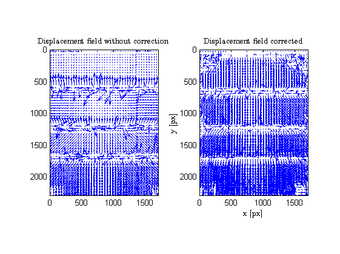
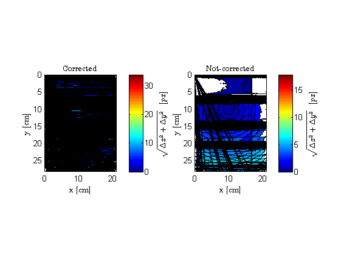
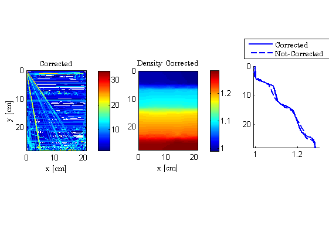
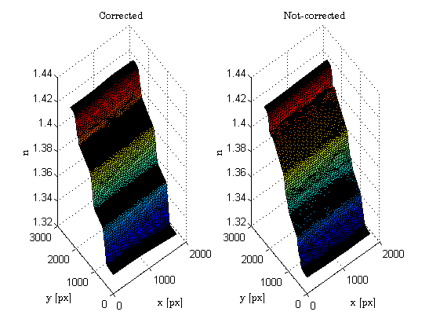

<!DOCTYPE html
  PUBLIC "-//W3C//DTD HTML 4.01 Transitional//EN">
<html><head>
      <meta http-equiv="Content-Type" content="text/html; charset=utf-8">
   <!--
This HTML was auto-generated from MATLAB code.
To make changes, update the MATLAB code and republish this document.
      --><title>BACKGROUND ORIENTED SCHLIEREN APPLIED TO STRATIFIED LIQUID CASES</title><meta name="generator" content="MATLAB 8.0"><link rel="schema.DC" href="http://purl.org/dc/elements/1.1/"><meta name="DC.date" content="2015-09-06"><meta name="DC.source" content="BOS_CODE.m"><style type="text/css">
html,body,div,span,applet,object,iframe,h1,h2,h3,h4,h5,h6,p,blockquote,pre,a,abbr,acronym,address,big,cite,code,del,dfn,em,font,img,ins,kbd,q,s,samp,small,strike,strong,sub,sup,tt,var,b,u,i,center,dl,dt,dd,ol,ul,li,fieldset,form,label,legend,table,caption,tbody,tfoot,thead,tr,th,td{margin:0;padding:0;border:0;outline:0;font-size:100%;vertical-align:baseline;background:transparent}body{line-height:1}ol,ul{list-style:none}blockquote,q{quotes:none}blockquote:before,blockquote:after,q:before,q:after{content:'';content:none}:focus{outine:0}ins{text-decoration:none}del{text-decoration:line-through}table{border-collapse:collapse;border-spacing:0}

html { min-height:100%; margin-bottom:1px; }
html body { height:100%; margin:0px; font-family:Arial, Helvetica, sans-serif; font-size:10px; color:#000; line-height:140%; background:#fff none; overflow-y:scroll; }
html body td { vertical-align:top; text-align:left; }

h1 { padding:0px; margin:0px 0px 25px; font-family:Arial, Helvetica, sans-serif; font-size:1.5em; color:#d55000; line-height:100%; font-weight:normal; }
h2 { padding:0px; margin:0px 0px 8px; font-family:Arial, Helvetica, sans-serif; font-size:1.2em; color:#000; font-weight:bold; line-height:140%; border-bottom:1px solid #d6d4d4; display:block; }
h3 { padding:0px; margin:0px 0px 5px; font-family:Arial, Helvetica, sans-serif; font-size:1.1em; color:#000; font-weight:bold; line-height:140%; }

a { color:#005fce; text-decoration:none; }
a:hover { color:#005fce; text-decoration:underline; }
a:visited { color:#004aa0; text-decoration:none; }

p { padding:0px; margin:0px 0px 20px; }
img { padding:0px; margin:0px 0px 20px; border:none; }
p img, pre img, tt img, li img { margin-bottom:0px; } 

ul { padding:0px; margin:0px 0px 20px 23px; list-style:square; }
ul li { padding:0px; margin:0px 0px 7px 0px; }
ul li ul { padding:5px 0px 0px; margin:0px 0px 7px 23px; }
ul li ol li { list-style:decimal; }
ol { padding:0px; margin:0px 0px 20px 0px; list-style:decimal; }
ol li { padding:0px; margin:0px 0px 7px 23px; list-style-type:decimal; }
ol li ol { padding:5px 0px 0px; margin:0px 0px 7px 0px; }
ol li ol li { list-style-type:lower-alpha; }
ol li ul { padding-top:7px; }
ol li ul li { list-style:square; }

.content { font-size:1.2em; line-height:140%; padding: 20px; }

pre, tt, code { font-size:12px; }
pre { margin:0px 0px 20px; }
pre.error { color:red; }
pre.codeinput { padding:10px; border:1px solid #d3d3d3; background:#f7f7f7; }
pre.codeoutput { padding:10px 11px; margin:0px 0px 20px; color:#4c4c4c; }

@media print { pre.codeinput, pre.codeoutput { word-wrap:break-word; width:100%; } }

span.keyword { color:#0000FF }
span.comment { color:#228B22 }
span.string { color:#A020F0 }
span.untermstring { color:#B20000 }
span.syscmd { color:#B28C00 }

.footer { width:auto; padding:10px 0px; margin:25px 0px 0px; border-top:1px dotted #878787; font-size:0.8em; line-height:140%; font-style:italic; color:#878787; text-align:left; float:none; }
.footer p { margin:0px; }
.footer a { color:#878787; }
.footer a:hover { color:#878787; text-decoration:underline; }
.footer a:visited { color:#878787; }

table th { padding:7px 5px; text-align:left; vertical-align:middle; border: 1px solid #d6d4d4; font-weight:bold; }
table td { padding:7px 5px; text-align:left; vertical-align:top; border:1px solid #d6d4d4; }


  </style></head><body><div class="content"><h1><b>BACKGROUND ORIENTED SCHLIEREN APPLIED TO STRATIFIED LIQUID CASES</b></h1><!--introduction--><p>An extension to background oriented Schlieren (BOS) is proposed in the following. The extension enables an accurate reconstruction of the density field in stratified liquid experiments. The multi-media imaging through air-glass-water-glass-air leads to an additional aberration that destroys the reconstruction. A two-step calibration and image remapping transform are the key components that correct the images through the stratified media and provide a non-intrusive full-field density measurements of transparent liquids.</p><!--/introduction--><h2>Contents</h2><div><ul><li><a href="#1">LOAD THE IMAGES</a></li><li><a href="#2">LOAD THE PARAMETERS FILE</a></li><li><a href="#3">CREATE THE CALIBRATION FIELD: Correlation air-water</a></li><li><a href="#4">THE REMAPPING</a></li><li><a href="#5">CORRELATION REFERENCE-REMAPPED</a></li><li><a href="#6">Comparison between corrected and not-corrected case</a></li><li><a href="#7">POISSON INTEGRATION</a></li><li><a href="#8">GRAPHICAL OUTPUT</a></li><li><a href="#9">ROUTINES</a></li><li><a href="#10">Parameters.m</a></li><li><a href="#11">BOS_correlation_OpenPIV.m</a></li><li><a href="#12">BOS_Remapping.m</a></li><li><a href="#13">BOS_PoissonSolver.m</a></li><li><a href="#14">List of the subfunctions contained in BOS_PoissonSolver</a></li><li><a href="#15">crop_field.m</a></li><li><a href="#16">create_RHS.m</a></li><li><a href="#17">CreateGrid.m</a></li><li><a href="#18">Poisson_equation_2D.m</a></li><li><a href="#19">Gladstone_Dale.m</a></li></ul></div><h2>LOAD THE IMAGES<a name="1"></a></h2><p>We capture and load three images of the background pattern, through air (im1), water (im2) and a saline stratified solution (im3) (im stands for image).</p><pre class="codeinput">im1=im2double(imread(<span class="string">'Data/Air_ref.tif'</span>));
im2=im2double(imread(<span class="string">'Data/Water_ref.tif'</span>));
im3=im2double(imread(<span class="string">'Data/4layers.tif'</span>));
</pre><h2>LOAD THE PARAMETERS FILE<a name="2"></a></h2><p>The parameters file contains: the calibration factor (Mconversion) that has to be measured experimentally since it depends by the camera resolution and distance between camera and backgroud dots; the images size (Lx,Lz) measured in pixels; the boundary coditions (val_up,val_down) involved in the Poisson's integration; the size in pixels (nx_pixel,ny_pixel) of the interrogation area An, used in the PIV cross-correlation algorithm and the overlap of the shifting window (overlap_x,overlap_y) in the two directions x and y.</p><pre class="codeinput">[Mconversion,Const,Lx,Lz,val_up,val_down,nx_pixel,ny_pixel,overlap_x,<span class="keyword">...</span>
    overlap_y]=Parameters();
</pre><h2>CREATE THE CALIBRATION FIELD: Correlation air-water<a name="3"></a></h2><p>The calibration is the displacement field $\Delta x$;$\Delta y$ obtained correlating the air and water images (im1,im2).</p><pre class="codeinput">[Calibration]=BOS_correlation_OpenPIV(im1,im2,nx_pixel,ny_pixel,overlap_x);
Magn_cal=sqrt(Calibration.u.^2+Calibration.v.^2);

skip = 2;              <span class="comment">% Skip vectors</span>
set(0,<span class="string">'defaulttextinterpreter'</span>,<span class="string">'latex'</span>)

figure
subplot(<span class="string">'position'</span>,[0.1 0.1 0.35 0.8]);
hold <span class="string">on</span>
quiver(Calibration.x(1:skip:end,1:skip:end),Calibration.y(1:skip:end,1:skip:end),<span class="keyword">...</span>
    Calibration.u(1:skip:end,1:skip:end),Calibration.v(1:skip:end,1:skip:end),<span class="keyword">...</span>
    <span class="string">'AutoScale'</span>,<span class="string">'off'</span>);
axis <span class="string">equal</span>
xlim([min(min(Calibration.x)),max(max(Calibration.x))])
ylim([min(min(Calibration.y)),max(max(Calibration.y))])
title(<span class="string">'Calibration vector field'</span>)
set(gca,<span class="string">'Ydir'</span>,<span class="string">'reverse'</span>)
xlabel(<span class="string">'x [px]'</span>)
ylabel(<span class="string">'y [px]'</span>)

subplot(<span class="string">'position'</span>,[0.55 0.1 0.4 0.8]);
contour(Calibration.x,Calibration.y,Magn_cal,50)
axis <span class="string">equal</span>
xlim([min(min(Calibration.x)),max(max(Calibration.x))])
ylim([min(min(Calibration.y)),max(max(Calibration.y))])
set(gca,<span class="string">'Ydir'</span>,<span class="string">'reverse'</span>)
title(<span class="string">'Calibration magnitude'</span>)
xlabel(<span class="string">'x [px]'</span>)
ylabel(<span class="string">'y [px]'</span>)
h = colorbar;
ylabel(h,<span class="string">'$\sqrt{\Delta x^{2} +\Delta y^{2}} \hspace{0.25cm}[px]$'</span>);
</pre> <h2>THE REMAPPING<a name="4"></a></h2><p>Background pattern image obtained through the saline stratified solution is remapped using the displacement field which origins are in the optical system and aberrations due to the multi-media (air-glass-water-glass-air) imaging</p><pre class="codeinput">[im3_remapped] = BOS_Remapping(Calibration,im3);
imwrite(im3_remapped,<span class="string">'Remapped_4layers.tif'</span>)
</pre><h2>CORRELATION REFERENCE-REMAPPED<a name="5"></a></h2><p>The corrected image (im3_remapped) is correlated with the original reference image takein in air (im1) and the result is used to construct the Poission equation and to solve it. We suggest to modify size of the An and overlap for a better cross-correlation result since the displacement im1-im3_remapped is one order of magnitude smaller than im1-im2 displ.</p><pre class="codeinput">nx_pixel=32;
ny_pixel=32;
overlap_x=0.25;
skip = 5;              <span class="comment">% Skip vectors</span>


[Displacement_POisson]=BOS_correlation_OpenPIV(im1,im3_remapped,nx_pixel,<span class="keyword">...</span>
    ny_pixel,overlap_x);
</pre><h2>Comparison between corrected and not-corrected case<a name="6"></a></h2><pre class="codeinput">[Displ_notcorr]=BOS_correlation_OpenPIV(im2,im3,nx_pixel,ny_pixel,<span class="keyword">...</span>
    overlap_x);


figure
subplot(121)
quiver(Displ_notcorr.x(1:skip:end,1:skip:end),Displ_notcorr.y(1:skip:end,1:skip:end),<span class="keyword">...</span>
    Displ_notcorr.u(1:skip:end,1:skip:end),Displ_notcorr.v(1:skip:end,1:skip:end),5);
axis <span class="string">equal</span>
xlim([min(min(Displ_notcorr.x)),max(max(Displ_notcorr.x))])
ylim([min(min(Displ_notcorr.y)),max(max(Displ_notcorr.y))])
title(<span class="string">'Displacement field without correction'</span>)
set(gca,<span class="string">'Ydir'</span>,<span class="string">'reverse'</span>)
subplot(122)
quiver(Displacement_POisson.x(1:skip:end,1:skip:end),Displacement_POisson.y(1:skip:end,1:skip:end),<span class="keyword">...</span>
    Displacement_POisson.u(1:skip:end,1:skip:end),Displacement_POisson.v(1:skip:end,1:skip:end),5);
axis <span class="string">equal</span>
xlabel(<span class="string">'x [px]'</span>)
ylabel(<span class="string">'y [px]'</span>)
xlim([min(min(Displacement_POisson.x)),max(max(Displacement_POisson.x))])
ylim([min(min(Displacement_POisson.y)),max(max(Displacement_POisson.y))])
set(gca,<span class="string">'Ydir'</span>,<span class="string">'reverse'</span>)
title(<span class="string">'Displacement field corrected'</span>)
</pre> <h2>POISSON INTEGRATION<a name="7"></a></h2><p>The result of the correlation (im1,im3_remapped) is than integrate through a Poisson's solutor. Eventually by applying the Gladstone-Dale conversion we have computed the 2D density field.</p><pre class="codeinput">[n2, xc, zc]=BOS_PoissonSolver(Displacement_POisson,Const,Lx,Lz);
[n2_nc, x_nc, z_nc]=BOS_PoissonSolver(Displ_notcorr,Const,Lx,Lz);

<span class="comment">% Gladstone-Dale conversion</span>
[Dens,Dens_av]=Gladstone_Dale(n2,xc,zc);
[Dens_2,Dens_av_2]=Gladstone_Dale(n2_nc, x_nc, z_nc);
</pre><h2>GRAPHICAL OUTPUT<a name="8"></a></h2><pre class="codeinput"><span class="comment">% ++++++++++++ Comparison Magnitudo +++++++++++++++++++++++++++++++++++++++</span>

Magnitudo=sqrt(Displacement_POisson.u.^2+Displacement_POisson.v.^2);
Magnitudo_nc=sqrt(Displ_notcorr.u.^2+Displ_notcorr.v.^2);

figure
subplot(121)
contourf(Displacement_POisson.x*Mconversion,<span class="keyword">...</span>
    Displacement_POisson.y*Mconversion,Magnitudo,50)
axis <span class="string">equal</span>
h1=colorbar;
xlabel(<span class="string">'x [cm]'</span>)
ylabel(<span class="string">'y [cm]'</span>)
axis <span class="string">equal</span>
xlim([min(min(Displacement_POisson.x*Mconversion)),<span class="keyword">...</span>
    max(max(Displacement_POisson.x*Mconversion))])
ylim([min(min(Displacement_POisson.y*Mconversion)),<span class="keyword">...</span>
    max(max(Displacement_POisson.y*Mconversion))])
<span class="comment">%caxis([0 5])</span>
title(<span class="string">'Corrected'</span>)
set(gca,<span class="string">'Ydir'</span>,<span class="string">'reverse'</span>)
ylabel(h1,<span class="string">'$\sqrt{\Delta x^{2} +\Delta y^{2}} \hspace{0.25cm}[px]$'</span>);

subplot(122)
contourf(Displ_notcorr.x*Mconversion,Displ_notcorr.y*Mconversion,<span class="keyword">...</span>
    Magnitudo_nc,50)
axis <span class="string">equal</span>
h2=colorbar;
xlabel(<span class="string">'x [cm]'</span>)
ylabel(<span class="string">'y [cm]'</span>)
axis <span class="string">equal</span>
xlim([min(min(Displ_notcorr.x*Mconversion)),<span class="keyword">...</span>
    max(max(Displ_notcorr.x*Mconversion))])
ylim([min(min(Displ_notcorr.y*Mconversion)),<span class="keyword">...</span>
    max(max(Displ_notcorr.y*Mconversion))])
<span class="comment">%caxis([0 5])</span>
title(<span class="string">'Not-corrected'</span>)
set(gca,<span class="string">'Ydir'</span>,<span class="string">'reverse'</span>)
ylabel(h2,<span class="string">'$\sqrt{\Delta x^{2} +\Delta y^{2}} \hspace{0.25cm}[px]$'</span>);

<span class="comment">% ++++ Results: Corrected Magnitude, Density field, Density profiles ++++++</span>

figure
subplot(<span class="string">'position'</span>,[0.08 0.35 0.3 0.4]);
contour(Displacement_POisson.x*Mconversion,<span class="keyword">...</span>
    Displacement_POisson.y*Mconversion,Magnitudo,20)
axis <span class="string">equal</span>
h=colorbar;
xlabel(<span class="string">'x [cm]'</span>)
ylabel(<span class="string">'y [cm]'</span>)
xlim([min(min(Displacement_POisson.x*Mconversion)),<span class="keyword">...</span>
    max(max(Displacement_POisson.x*Mconversion))])
ylim([min(min(Displacement_POisson.y*Mconversion)),<span class="keyword">...</span>
    max(max(Displacement_POisson.y*Mconversion))])
<span class="comment">% caxis([0 10])</span>
title(<span class="string">'Corrected'</span>)
set(gca,<span class="string">'Ydir'</span>,<span class="string">'reverse'</span>)

subplot(<span class="string">'position'</span>,[0.42 0.35 0.3 0.4]);
pcolor(Dens.x*Mconversion, Dens.z*Mconversion, Dens.f')
shading <span class="string">flat</span>
axis <span class="string">equal</span> <span class="string">tight</span>
xlabel(<span class="string">'x [cm]'</span>)
title(<span class="string">'Density Corrected'</span>)
colorbar;
set(gca,<span class="string">'Ydir'</span>,<span class="string">'reverse'</span>)

subplot(<span class="string">'position'</span>,[0.77 0.4 0.20 0.45]);
hold <span class="string">on</span>
plot(Dens_av,Dens.z*Mconversion,<span class="string">'b'</span>,<span class="string">'linewidth'</span>,1.5)
plot(Dens_av_2,Dens_2.z*Mconversion,<span class="string">'b--'</span>,<span class="string">'linewidth'</span>,1.5)
xlabel(<span class="string">'\rho [g/mL]'</span>)
xlim([0.99 1.3])
ylim([0 28])
Leg=legend(<span class="string">'Corrected'</span>,<span class="string">'Not-Corrected'</span>);
set(gca,<span class="string">'Ydir'</span>,<span class="string">'reverse'</span>)
set(Leg,<span class="string">'location'</span>,<span class="string">'northoutside'</span>);

<span class="comment">% ++++++++++++ Comparison POisson solutions +++++++++++++++++++++++++++++++</span>

figure
subplot(121)
surf(xc,zc,n2')
xlabel(<span class="string">'x [px]'</span>)
ylabel(<span class="string">'y [px]'</span>)
zlabel(<span class="string">'n'</span>)
title(<span class="string">'Corrected'</span>)

subplot(122)
surf(x_nc,z_nc,n2_nc')
xlabel(<span class="string">'x [px]'</span>)
ylabel(<span class="string">'y [px]'</span>)
zlabel(<span class="string">'n'</span>)
title(<span class="string">'Not-corrected'</span>)
</pre><pre class="codeoutput">Warning: Unable to interpret LaTeX string "\rho
[g/mL]" 
</pre>   <h2>ROUTINES<a name="9"></a></h2><h2>Parameters.m<a name="10"></a></h2><p>PARAMETERS_FILE</p><pre class="codeinput"><span class="comment">%  function [Mconversion,Const,Lx,Lz,val_up,val_down,nx_pixel,ny_pixel,...</span>
<span class="comment">%     overlap_x,overlap_y]=Parameters(varargin);</span>

<span class="comment">% Mconversion=0.0123;              % Using the calibration body: pixel/cm</span>

<span class="comment">% %(see the numbers in the BOS sketch)</span>
<span class="comment">% B=0*(1/Mconversion);             % Distance section 5-6</span>
<span class="comment">% W=20*(1/Mconversion);            % Distance section 3-4</span>
<span class="comment">% L=110*(1/Mconversion);           % Distance section 1-2</span>
<span class="comment">% t=0.5*(1/Mconversion);           % thickness of the glass</span>
<span class="comment">% ZD=(L+2*t+W+B)*(1/Mconversion);</span>

<span class="comment">% Set the indexes of refraction</span>
<span class="comment">% n_air=1;</span>
<span class="comment">% n_water=1.332;</span>
<span class="comment">% n_glass=1.43;</span>

<span class="comment">% Compute the constant of the Poisson equation</span>
<span class="comment">% Const_inv=2*(((L^2+B^2)/(n_air)) + (t^2/n_glass) + ((W)/(n_water)));</span>
<span class="comment">% Const=(Const_inv)^-1;</span>

<span class="comment">% Dirichlet's conditions at the top and bottom</span>
<span class="comment">% val_up=1.332;</span>
<span class="comment">% val_down=1.433;  %</span>

<span class="comment">% Size of the images</span>
<span class="comment">% Lx=1720; % IN PIXEL</span>
<span class="comment">% Lz=2304;</span>

<span class="comment">% PIV-parameters</span>
<span class="comment">% nx_pixel = 64;</span>
<span class="comment">% ny_pixel = 64;</span>
<span class="comment">% overlap_x=0.5;</span>
<span class="comment">% overlap_y=0.5;</span>
</pre><h2>BOS_correlation_OpenPIV.m<a name="11"></a></h2><p>cross-correlation of two images, using OpenPIV (www.openpiv.net) Inputs:   im1,im2 - images Outputs:   Displ - displacement field, dx,dy</p><pre class="codeinput"><span class="comment">% function [Displ]=BOS_correlation_OpenPIV(im1,im2,nx,ny,overlap_x);</span>

<span class="comment">% Add openpiv toolbox:</span>
<span class="comment">% addpath('./openpiv');</span>

<span class="comment">% Overlap in pixels</span>
<span class="comment">% overlap_px = nx*overlap_x;   % pix</span>
<span class="comment">% overlap_py = nx*overlap_x;   % pix</span>

<span class="comment">% Compute the cross-correlation using OpenPIV</span>
<span class="comment">% Note that openpiv also saves .VEC file in the image folder if you need</span>
<span class="comment">% it later</span>
<span class="comment">% loadvec([imfile1,'.vec']);</span>

<span class="comment">% [x,y,u,v] = openpiv( im1, im2, ...</span>
<span class="comment">%     nx, ny, ...</span>
<span class="comment">%     overlap_px, overlap_py);</span>

<span class="comment">% u(isnan(u)) = 0;</span>
<span class="comment">% v(isnan(v)) = 0;</span>
<span class="comment">% u = medfilt2(u, [3 3]);  % size of the window</span>
<span class="comment">% v = medfilt2(v, [3 3]);</span>

<span class="comment">% Displ.x = x;</span>
<span class="comment">% Displ.y = y;</span>
<span class="comment">% Displ.u = u;</span>
<span class="comment">% Displ.v = v;</span>
</pre><h2>BOS_Remapping.m<a name="12"></a></h2><p>remapping has two steps: 1. interpolate the dx,dy fields to each pixel 2. warp the image according to the interpolated dx,dy [m,n] = size(im1); % note that m is vertical, n is horizontal [X,Y] = meshgrid(0:n-1,0:m-1);</p><pre class="codeinput"><span class="comment">% function [new_image] = BOS_Remapping(Displ,im1);</span>

<span class="comment">% IMAGE_REMAPPED = BOS_REMAPPING(CALIBRATION,MAGE)</span>
<span class="comment">% Remaps the second image according to the displacement values stored ...</span>
<span class="comment">% into the calibration field.</span>

<span class="comment">% vi = interp2(Displ.x',Displ.y',Displ.v',X,Y,'linear');</span>
<span class="comment">% ui = interp2(Displ.x',Displ.y',Displ.u',X,Y,'linear');</span>

<span class="comment">% Replace the NaN using zeros</span>
<span class="comment">% ui(isnan(ui)) = 0;</span>
<span class="comment">% vi(isnan(vi)) = 0;</span>

<span class="comment">% im1=flipud(im1);</span>
<span class="comment">% new_image = flipud(imwarp(im1,ui,vi,true));</span>
</pre><h2>BOS_PoissonSolver.m<a name="13"></a></h2><pre class="codeinput"><span class="comment">% function [n2, xc, zc]=BOS_PoissonSolver(Displacement_POisson,Const,Lx,Lz);</span>

<span class="comment">% Crop the field because of the remapping algorithm</span>
<span class="comment">% [Displ]=crop_field(Displacement_POisson,Lx,Lz);</span>

<span class="comment">% If you decide do not to crop the field, uncomment this line</span>
<span class="comment">% and comment the function crop_field:</span>

<span class="comment">%Displ=Displacement_POisson;</span>

<span class="comment">% Create the RHS of the POISSON equation by loading the Displ</span>
<span class="comment">% function [Rhs]=create_RHS(Displ);</span>

<span class="comment">% Rotate the RHS</span>
<span class="comment">% rhs=Const.*fliplr(Rhs);</span>
<span class="comment">% [Rx,Ry]=size(rhs);</span>

<span class="comment">% Create the grid</span>
<span class="comment">% function [xc zc dxb dxc dzc dzb Nx Nz]= CreateGrid(Lx, Lz,Rx,Ry);</span>

<span class="comment">% Poisson integration</span>
<span class="comment">% function [n2]=Poisson_equation_2D(Lx,Lz,Rhs,Const);</span>
</pre><h2>List of the subfunctions contained in BOS_PoissonSolver<a name="14"></a></h2><pre class="codeinput"><span class="comment">% # crop_field.m</span>
<span class="comment">% # create_RHS.m</span>
<span class="comment">% # CreateGrid.m</span>
<span class="comment">% # Poisson_equation_2D.m</span>
</pre><h2>crop_field.m<a name="15"></a></h2><p>This function crops the displacement field since the remapping algorithm has created the external frames (lack in the data) due to the moving of the pixels close to the boundary of the image.</p><pre class="codeinput"><span class="comment">% function [Displ]=crop_field(Displacement_POisson,Lx,Lz);</span>

<span class="comment">% Displ=Displacement_POisson;</span>
<span class="comment">% Minimum=min(min(Displ.y));</span>
<span class="comment">% Displ.y=Displ.y-abs(Minimum);</span>
<span class="comment">% Magnitude=sqrt(Displ.u.^2+Displ.v.^2);</span>
<span class="comment">% [a,b]=size(Displ.x);</span>

<span class="comment">% Dxx=Lx/a;</span>
<span class="comment">% Dyy=Lz/b;</span>
<span class="comment">% nx_pixels_crop=700;  %250</span>
<span class="comment">% ny_pixels_crop=350;  %200</span>
<span class="comment">% Lx=Lx-nx_pixels_crop;</span>
<span class="comment">% Lz=Lz-ny_pixels_crop;</span>
<span class="comment">% % number of pixels to crop in the right and left sides of the image</span>
<span class="comment">% Dx_pixels=round(nx_pixels_crop/Dxx);</span>
<span class="comment">% Dy_pixels=round(ny_pixels_crop/Dyy);</span>
<span class="comment">% Displ.x=Displ.x(Dx_pixels:end-Dx_pixels,Dy_pixels:end-Dy_pixels);</span>
<span class="comment">% Displ.y=Displ.y(Dx_pixels:end-Dx_pixels,Dy_pixels:end-Dy_pixels);</span>
<span class="comment">% Displ.u=(Displ.u(Dx_pixels:end-Dx_pixels,Dy_pixels:end-Dy_pixels));</span>
<span class="comment">% Displ.v=(Displ.v(Dx_pixels:end-Dx_pixels,Dy_pixels:end-Dy_pixels));</span>
<span class="comment">% Magnitude_crop=sqrt(Displ.u.^2+Displ.v.^2);</span>
<span class="comment">% Displ;</span>
</pre><h2>create_RHS.m<a name="16"></a></h2><p>The function creates the RHS of the Poisson equation deriving the displacement components obtained correlating the reference with ... the corrected image (im1,im3_remapped).</p><pre class="codeinput"><span class="comment">% function [Rhs,Nx,Nz]=create_RHS(Displ);</span>
<span class="comment">% u=Displ.u;</span>
<span class="comment">% w=Displ.v;</span>
<span class="comment">% x=Displ.x;</span>
<span class="comment">% z=Displ.y;</span>

<span class="comment">% [width,height]=size(u);</span>
<span class="comment">% Compute the central difference fields</span>

<span class="comment">% Preallocation for the variables du and dw;</span>
<span class="comment">% du=zeros(width-2,height-2);</span>
<span class="comment">% dw=zeros(width-2,height-2);</span>

<span class="comment">% for k=2:width-1</span>
<span class="comment">% for j=2:height-1</span>
<span class="comment">%     du(k,j)=(u(k+1,j)-u(k-1,j))/2*(abs(x(2,2)-x(2,1)));</span>
<span class="comment">%     dw(k,j)=(w(k,j+1)-w(k,j-1))/2*(abs(z(1,1)-z(1,2)));</span>
<span class="comment">% end</span>
<span class="comment">% end</span>

<span class="comment">% Rhs=(du+dw);</span>
<span class="comment">% Rhs(isnan(Rhs)) = 0 ;</span>
<span class="comment">% [Nz,Nx]=size(Rhs);</span>
</pre><h2>CreateGrid.m<a name="17"></a></h2><p>The following function generates the grid where the Poisson eq. will be solved.</p><pre class="codeinput"><span class="comment">% function [xc zc dxb dxc dzc dzb Nx Nz]= CreateGrid(Lx, Lz,Rx,Ry);</span>

<span class="comment">% Nx=Rx-2;</span>
<span class="comment">% Nz=Ry-2;</span>
<span class="comment">% xi=linspace(0,Lx,Nx+1);</span>
<span class="comment">% xb = xi;</span>
<span class="comment">% dxc=ones(length(xi));</span>
<span class="comment">% dxb=ones(length(xi));</span>
<span class="comment">% xc=linspace(0,Lx,Nx+2);</span>
<span class="comment">% zi=linspace(0,Lz,Nz+1);</span>
<span class="comment">% zb = zi;</span>
<span class="comment">% zc=linspace(0,Lz,Nz+2);</span>
<span class="comment">% dzc=ones(length(zi));</span>
<span class="comment">% dzb=ones(length(zi));</span>
</pre><h2>Poisson_equation_2D.m<a name="18"></a></h2><p>Solving the 2-D Poisson equation by the Finite Difference</p><pre class="codeinput"><span class="keyword">...</span><span class="comment">Method.</span>
<span class="comment">% Numerical scheme used is a second order central difference in space</span>
<span class="keyword">...</span><span class="comment">(5-point difference).</span>

<span class="comment">% function [n2]=Poisson_equation_2D(Lx,Lz,Rhs,Const);</span>

<span class="comment">% [Nx,Nz]=size(Rhs);</span>

<span class="comment">%Specifying parameters (check why It does not work if we change them)</span>
<span class="comment">% dx=Lx/(Nx-1);              %Width of space step(x)</span>
<span class="comment">% dy=Lz/(Nz-1);              %Width of space step(y)</span>
<span class="comment">% x=0:dx:Lx;                 %Range of x(0,2) and specifying the grid points</span>
<span class="comment">% y=0:dy:Lz;                 %Range of y(0,2) and specifying the grid points</span>
<span class="comment">% b=zeros(Nx,Nz);            %Preallocating b</span>
<span class="comment">% pn=zeros(Nx,Nz);           %Preallocating pn</span>

<span class="comment">% Initial Conditions</span>
<span class="comment">% p=zeros(Nx,Nz);            %Preallocating p</span>
<span class="comment">% Rhs=Const.*fliplr(Rhs);</span>
<span class="comment">% b=(Rhs);</span>
<span class="comment">% i=2:Nx-1;</span>
<span class="comment">% j=2:Nz-1;</span>

<span class="comment">% Poisson equation solution (iterative) method</span>
<span class="comment">% tol = 1e-4;			       % Set tollerance</span>
<span class="comment">% maxerr = inf;	               % initial error</span>
<span class="comment">% iter = 0;</span>
<span class="comment">% pn=p;</span>
<span class="comment">%</span>
<span class="comment">% while maxerr &gt; tol</span>
<span class="comment">%     iter = iter + 1;</span>
<span class="comment">%     disp(['Iteration no. ',num2str(iter)]);</span>

<span class="comment">%Explicit iterative scheme with C.D in space (5-point difference)</span>
<span class="comment">%     p(i,j)=((dy^2*(pn(i+1,j)+pn(i-1,j)))+(dx^2*(pn(i,j+1)+...</span>
<span class="comment">%         pn(i,j-1)))-(b(i,j)*dx^2*dy*2))/(2*(dx^2+dy^2));</span>

<span class="comment">% Boundary conditions</span>
<span class="comment">% Neumann's conditions   % dp/dx|end=dp/dx|end-1</span>
<span class="comment">%     p(1,:)=p(2,:);</span>
<span class="comment">%     p(end,:)=p(end-1,:);</span>

<span class="comment">% Neumann's conditions</span>
<span class="comment">%     p(:,1)=p(:,2);</span>
<span class="comment">%     p(:,end)=p(:,end-1);</span>

<span class="comment">%     maxerr = max(max(abs((p-pn)./p)));</span>
<span class="comment">%     disp(['Maximum error is  ',num2str(maxerr)]);</span>
<span class="comment">%     pn=p;</span>

<span class="comment">% end			% as long the error larger than tolerance, continue</span>
<span class="comment">% PG2_gray=p*255;</span>
<span class="comment">% n_max=1.43;</span>
<span class="comment">% n_min=1.332;</span>
<span class="comment">% n2= scaledata(PG2_gray,n_min,n_max);</span>
</pre><h2>Gladstone_Dale.m<a name="19"></a></h2><p>The function converts the refractive index into density using the Gladstone Dale equation. Galdstone-Dale constant for saline-water can be found here: <a href="https://goo.gl/lIwuaL"> https://goo.gl/lIwuaL </a> </p><pre class="codeinput"><span class="comment">% function [Dens,Dens_av]=Gladstone_Dale(n2,xc,zc);</span>

<span class="comment">% G=0.335;  %[g/mL]</span>
<span class="comment">% S_out=(n2-1)./G;</span>
<span class="comment">% Dens.x=xc;</span>
<span class="comment">% Dens.z=zc;</span>
<span class="comment">% Dens.f=S_out;</span>
<span class="comment">% Dens_av=mean((S_out));</span>
</pre><p class="footer"><br><a href="http://www.mathworks.com/products/matlab/">Published with MATLAB&reg; R2012b</a><br></p></div><!--
##### SOURCE BEGIN #####
%% *BACKGROUND ORIENTED SCHLIEREN APPLIED TO STRATIFIED LIQUID CASES*
% An extension to background oriented Schlieren (BOS) is proposed in the 
% following. The extension enables an accurate reconstruction of the
% density field in stratified liquid experiments.
% The multi-media imaging through air-glass-water-glass-air leads 
% to an additional aberration that destroys the reconstruction. 
% A two-step calibration and image remapping transform are the key
% components that correct the images through the stratified media and
% provide a non-intrusive full-field density measurements of transparent
% liquids.

%% LOAD THE IMAGES
% We capture and load three images of the background pattern, through air
% (im1), water (im2) and a saline stratified solution (im3)
% (im stands for image).

im1=im2double(imread('Data/Air_ref.tif'));
im2=im2double(imread('Data/Water_ref.tif'));
im3=im2double(imread('Data/4layers.tif'));

%% LOAD THE PARAMETERS FILE
% The parameters file contains: the calibration factor (Mconversion)
% that has to be measured experimentally since it depends by the camera
% resolution and distance between camera and backgroud dots; 
% the images size (Lx,Lz) measured in pixels; the boundary coditions
% (val_up,val_down) involved in the Poisson's integration; the size in
% pixels (nx_pixel,ny_pixel) of the interrogation area An, used in the
% PIV cross-correlation algorithm and the overlap of the shifting window 
% (overlap_x,overlap_y) in the two directions x and y.

[Mconversion,Const,Lx,Lz,val_up,val_down,nx_pixel,ny_pixel,overlap_x,...
    overlap_y]=Parameters();
                                              
%% CREATE THE CALIBRATION FIELD: Correlation air-water
% The calibration is the displacement field $\Delta x$;$\Delta y$
% obtained correlating the air and water images (im1,im2).

[Calibration]=BOS_correlation_OpenPIV(im1,im2,nx_pixel,ny_pixel,overlap_x);
Magn_cal=sqrt(Calibration.u.^2+Calibration.v.^2);

skip = 2;              % Skip vectors
set(0,'defaulttextinterpreter','latex')

figure
subplot('position',[0.1 0.1 0.35 0.8]);  
hold on
quiver(Calibration.x(1:skip:end,1:skip:end),Calibration.y(1:skip:end,1:skip:end),...
    Calibration.u(1:skip:end,1:skip:end),Calibration.v(1:skip:end,1:skip:end),...
    'AutoScale','off');
axis equal
xlim([min(min(Calibration.x)),max(max(Calibration.x))])
ylim([min(min(Calibration.y)),max(max(Calibration.y))])
title('Calibration vector field')
set(gca,'Ydir','reverse')
xlabel('x [px]')
ylabel('y [px]')

subplot('position',[0.55 0.1 0.4 0.8]);  
contour(Calibration.x,Calibration.y,Magn_cal,50)
axis equal
xlim([min(min(Calibration.x)),max(max(Calibration.x))])
ylim([min(min(Calibration.y)),max(max(Calibration.y))])
set(gca,'Ydir','reverse')
title('Calibration magnitude')
xlabel('x [px]')
ylabel('y [px]')
h = colorbar;
ylabel(h,'$\sqrt{\Delta x^{2} +\Delta y^{2}} \hspace{0.25cm}[px]$');

%% THE REMAPPING 
% Background pattern image obtained through the saline stratified solution
% is remapped using the displacement field which origins are in the optical
% system and aberrations due to the multi-media (air-glass-water-glass-air)
% imaging

[im3_remapped] = BOS_Remapping(Calibration,im3);   
imwrite(im3_remapped,'Remapped_4layers.tif')

%% CORRELATION REFERENCE-REMAPPED
% The corrected image (im3_remapped) is correlated with the original 
% reference image takein in air (im1) and the result is used to construct
% the Poission equation and to solve it.
% We suggest to modify size of the An and overlap for a better
% cross-correlation result since the displacement im1-im3_remapped is one 
% order of magnitude smaller than im1-im2 displ.

nx_pixel=32;
ny_pixel=32;
overlap_x=0.25;
skip = 5;              % Skip vectors


[Displacement_POisson]=BOS_correlation_OpenPIV(im1,im3_remapped,nx_pixel,...
    ny_pixel,overlap_x);

%% Comparison between corrected and not-corrected case
[Displ_notcorr]=BOS_correlation_OpenPIV(im2,im3,nx_pixel,ny_pixel,...
    overlap_x);


figure
subplot(121)
quiver(Displ_notcorr.x(1:skip:end,1:skip:end),Displ_notcorr.y(1:skip:end,1:skip:end),...
    Displ_notcorr.u(1:skip:end,1:skip:end),Displ_notcorr.v(1:skip:end,1:skip:end),5);
axis equal
xlim([min(min(Displ_notcorr.x)),max(max(Displ_notcorr.x))])
ylim([min(min(Displ_notcorr.y)),max(max(Displ_notcorr.y))])
title('Displacement field without correction')
set(gca,'Ydir','reverse')
subplot(122)
quiver(Displacement_POisson.x(1:skip:end,1:skip:end),Displacement_POisson.y(1:skip:end,1:skip:end),...
    Displacement_POisson.u(1:skip:end,1:skip:end),Displacement_POisson.v(1:skip:end,1:skip:end),5);
axis equal
xlabel('x [px]')
ylabel('y [px]')
xlim([min(min(Displacement_POisson.x)),max(max(Displacement_POisson.x))])
ylim([min(min(Displacement_POisson.y)),max(max(Displacement_POisson.y))])
set(gca,'Ydir','reverse')
title('Displacement field corrected')


%% POISSON INTEGRATION
% The result of the correlation (im1,im3_remapped) is than integrate
% through a Poisson's solutor. Eventually by applying the Gladstone-Dale 
% conversion we have computed the 2D density field.

[n2, xc, zc]=BOS_PoissonSolver(Displacement_POisson,Const,Lx,Lz);
[n2_nc, x_nc, z_nc]=BOS_PoissonSolver(Displ_notcorr,Const,Lx,Lz);

% Gladstone-Dale conversion
[Dens,Dens_av]=Gladstone_Dale(n2,xc,zc);
[Dens_2,Dens_av_2]=Gladstone_Dale(n2_nc, x_nc, z_nc);

%% GRAPHICAL OUTPUT 

% ++++++++++++ Comparison Magnitudo +++++++++++++++++++++++++++++++++++++++

Magnitudo=sqrt(Displacement_POisson.u.^2+Displacement_POisson.v.^2);
Magnitudo_nc=sqrt(Displ_notcorr.u.^2+Displ_notcorr.v.^2);

figure
subplot(121)
contourf(Displacement_POisson.x*Mconversion,...
    Displacement_POisson.y*Mconversion,Magnitudo,50)
axis equal
h1=colorbar;
xlabel('x [cm]')
ylabel('y [cm]')
axis equal
xlim([min(min(Displacement_POisson.x*Mconversion)),...
    max(max(Displacement_POisson.x*Mconversion))])
ylim([min(min(Displacement_POisson.y*Mconversion)),...
    max(max(Displacement_POisson.y*Mconversion))])
%caxis([0 5])
title('Corrected')
set(gca,'Ydir','reverse')
ylabel(h1,'$\sqrt{\Delta x^{2} +\Delta y^{2}} \hspace{0.25cm}[px]$');

subplot(122)
contourf(Displ_notcorr.x*Mconversion,Displ_notcorr.y*Mconversion,...
    Magnitudo_nc,50)
axis equal
h2=colorbar;
xlabel('x [cm]')
ylabel('y [cm]')
axis equal
xlim([min(min(Displ_notcorr.x*Mconversion)),...
    max(max(Displ_notcorr.x*Mconversion))])
ylim([min(min(Displ_notcorr.y*Mconversion)),...
    max(max(Displ_notcorr.y*Mconversion))])
%caxis([0 5])
title('Not-corrected')
set(gca,'Ydir','reverse')
ylabel(h2,'$\sqrt{\Delta x^{2} +\Delta y^{2}} \hspace{0.25cm}[px]$');

% ++++ Results: Corrected Magnitude, Density field, Density profiles ++++++

figure
subplot('position',[0.08 0.35 0.3 0.4]);  
contour(Displacement_POisson.x*Mconversion,...
    Displacement_POisson.y*Mconversion,Magnitudo,20)
axis equal
h=colorbar;
xlabel('x [cm]')
ylabel('y [cm]')
xlim([min(min(Displacement_POisson.x*Mconversion)),...
    max(max(Displacement_POisson.x*Mconversion))])
ylim([min(min(Displacement_POisson.y*Mconversion)),...
    max(max(Displacement_POisson.y*Mconversion))])
% caxis([0 10])
title('Corrected')
set(gca,'Ydir','reverse')

subplot('position',[0.42 0.35 0.3 0.4]);  
pcolor(Dens.x*Mconversion, Dens.z*Mconversion, Dens.f')
shading flat
axis equal tight 
xlabel('x [cm]')
title('Density Corrected')
colorbar;
set(gca,'Ydir','reverse')

subplot('position',[0.77 0.4 0.20 0.45]); 
hold on
plot(Dens_av,Dens.z*Mconversion,'b','linewidth',1.5)
plot(Dens_av_2,Dens_2.z*Mconversion,'bREPLACE_WITH_DASH_DASH','linewidth',1.5)
xlabel('\rho [g/mL]')
xlim([0.99 1.3])
ylim([0 28])
Leg=legend('Corrected','Not-Corrected');
set(gca,'Ydir','reverse')
set(Leg,'location','northoutside');

% ++++++++++++ Comparison POisson solutions +++++++++++++++++++++++++++++++

figure
subplot(121)
surf(xc,zc,n2')
xlabel('x [px]')
ylabel('y [px]')
zlabel('n')
title('Corrected')

subplot(122)
surf(x_nc,z_nc,n2_nc')
xlabel('x [px]')
ylabel('y [px]')
zlabel('n')
title('Not-corrected')


%% ROUTINES
%% Parameters.m
% PARAMETERS_FILE

%  function [Mconversion,Const,Lx,Lz,val_up,val_down,nx_pixel,ny_pixel,...
%     overlap_x,overlap_y]=Parameters(varargin);

% Mconversion=0.0123;              % Using the calibration body: pixel/cm

% %(see the numbers in the BOS sketch)
% B=0*(1/Mconversion);             % Distance section 5-6  
% W=20*(1/Mconversion);            % Distance section 3-4
% L=110*(1/Mconversion);           % Distance section 1-2
% t=0.5*(1/Mconversion);           % thickness of the glass
% ZD=(L+2*t+W+B)*(1/Mconversion);   

% Set the indexes of refraction
% n_air=1;                
% n_water=1.332;
% n_glass=1.43;
 
% Compute the constant of the Poisson equation
% Const_inv=2*(((L^2+B^2)/(n_air)) + (t^2/n_glass) + ((W)/(n_water)));
% Const=(Const_inv)^-1;
 
% Dirichlet's conditions at the top and bottom
% val_up=1.332;    
% val_down=1.433;  % 
 
% Size of the images
% Lx=1720; % IN PIXEL 
% Lz=2304; 
 
% PIV-parameters
% nx_pixel = 64;
% ny_pixel = 64;
% overlap_x=0.5;
% overlap_y=0.5;


%% BOS_correlation_OpenPIV.m
% cross-correlation of two images, using OpenPIV (www.openpiv.net)
% Inputs:
%   im1,im2 - images
% Outputs:
%   Displ - displacement field, dx,dy

% function [Displ]=BOS_correlation_OpenPIV(im1,im2,nx,ny,overlap_x);

% Add openpiv toolbox:
% addpath('./openpiv');

% Overlap in pixels
% overlap_px = nx*overlap_x;   % pix
% overlap_py = nx*overlap_x;   % pix

% Compute the cross-correlation using OpenPIV
% Note that openpiv also saves .VEC file in the image folder if you need
% it later
% loadvec([imfile1,'.vec']);

% [x,y,u,v] = openpiv( im1, im2, ...
%     nx, ny, ...
%     overlap_px, overlap_py);

% u(isnan(u)) = 0;
% v(isnan(v)) = 0;
% u = medfilt2(u, [3 3]);  % size of the window
% v = medfilt2(v, [3 3]);

% Displ.x = x;
% Displ.y = y; 
% Displ.u = u;
% Displ.v = v; 

%% BOS_Remapping.m
% remapping has two steps:
% 1. interpolate the dx,dy fields to each pixel
% 2. warp the image according to the interpolated dx,dy
% [m,n] = size(im1); % note that m is vertical, n is horizontal
% [X,Y] = meshgrid(0:n-1,0:m-1); 

% function [new_image] = BOS_Remapping(Displ,im1);

% IMAGE_REMAPPED = BOS_REMAPPING(CALIBRATION,MAGE)
% Remaps the second image according to the displacement values stored ...
% into the calibration field.

% vi = interp2(Displ.x',Displ.y',Displ.v',X,Y,'linear');
% ui = interp2(Displ.x',Displ.y',Displ.u',X,Y,'linear');

% Replace the NaN using zeros
% ui(isnan(ui)) = 0;
% vi(isnan(vi)) = 0;

% im1=flipud(im1);
% new_image = flipud(imwarp(im1,ui,vi,true)); 
 
%% BOS_PoissonSolver.m

% function [n2, xc, zc]=BOS_PoissonSolver(Displacement_POisson,Const,Lx,Lz);

% Crop the field because of the remapping algorithm
% [Displ]=crop_field(Displacement_POisson,Lx,Lz);

% If you decide do not to crop the field, uncomment this line
% and comment the function crop_field:

%Displ=Displacement_POisson; 

% Create the RHS of the POISSON equation by loading the Displ
% function [Rhs]=create_RHS(Displ);

% Rotate the RHS
% rhs=Const.*fliplr(Rhs);
% [Rx,Ry]=size(rhs);

% Create the grid
% function [xc zc dxb dxc dzc dzb Nx Nz]= CreateGrid(Lx, Lz,Rx,Ry);

% Poisson integration
% function [n2]=Poisson_equation_2D(Lx,Lz,Rhs,Const);

%% List of the subfunctions contained in BOS_PoissonSolver

% # crop_field.m
% # create_RHS.m
% # CreateGrid.m
% # Poisson_equation_2D.m

%% crop_field.m
% This function crops the displacement field since the remapping algorithm
% has created the external frames (lack in the data) due to the moving of 
% the pixels close to the boundary of the image. 

% function [Displ]=crop_field(Displacement_POisson,Lx,Lz);

% Displ=Displacement_POisson;
% Minimum=min(min(Displ.y));
% Displ.y=Displ.y-abs(Minimum);
% Magnitude=sqrt(Displ.u.^2+Displ.v.^2);
% [a,b]=size(Displ.x);

% Dxx=Lx/a;
% Dyy=Lz/b;
% nx_pixels_crop=700;  %250
% ny_pixels_crop=350;  %200
% Lx=Lx-nx_pixels_crop;
% Lz=Lz-ny_pixels_crop;
% % number of pixels to crop in the right and left sides of the image
% Dx_pixels=round(nx_pixels_crop/Dxx);   
% Dy_pixels=round(ny_pixels_crop/Dyy);  
% Displ.x=Displ.x(Dx_pixels:end-Dx_pixels,Dy_pixels:end-Dy_pixels);
% Displ.y=Displ.y(Dx_pixels:end-Dx_pixels,Dy_pixels:end-Dy_pixels);
% Displ.u=(Displ.u(Dx_pixels:end-Dx_pixels,Dy_pixels:end-Dy_pixels));
% Displ.v=(Displ.v(Dx_pixels:end-Dx_pixels,Dy_pixels:end-Dy_pixels));
% Magnitude_crop=sqrt(Displ.u.^2+Displ.v.^2);
% Displ;

%% create_RHS.m
% The function creates the RHS of the Poisson equation deriving the
% displacement components obtained correlating the reference with ...
% the corrected image (im1,im3_remapped). 

% function [Rhs,Nx,Nz]=create_RHS(Displ);
% u=Displ.u;
% w=Displ.v;
% x=Displ.x;
% z=Displ.y;

% [width,height]=size(u);
% Compute the central difference fields

% Preallocation for the variables du and dw;
% du=zeros(width-2,height-2);
% dw=zeros(width-2,height-2);

% for k=2:width-1
% for j=2:height-1    
%     du(k,j)=(u(k+1,j)-u(k-1,j))/2*(abs(x(2,2)-x(2,1)));
%     dw(k,j)=(w(k,j+1)-w(k,j-1))/2*(abs(z(1,1)-z(1,2)));
% end
% end

% Rhs=(du+dw);
% Rhs(isnan(Rhs)) = 0 ;
% [Nz,Nx]=size(Rhs);

%% CreateGrid.m
% The following function generates the grid where the Poisson eq.
% will be solved.

% function [xc zc dxb dxc dzc dzb Nx Nz]= CreateGrid(Lx, Lz,Rx,Ry);

% Nx=Rx-2;
% Nz=Ry-2;
% xi=linspace(0,Lx,Nx+1);
% xb = xi;
% dxc=ones(length(xi));
% dxb=ones(length(xi));
% xc=linspace(0,Lx,Nx+2);
% zi=linspace(0,Lz,Nz+1);
% zb = zi;
% zc=linspace(0,Lz,Nz+2);
% dzc=ones(length(zi));
% dzb=ones(length(zi));

%% Poisson_equation_2D.m
% Solving the 2-D Poisson equation by the Finite Difference
...Method. 
% Numerical scheme used is a second order central difference in space
...(5-point difference).
    
% function [n2]=Poisson_equation_2D(Lx,Lz,Rhs,Const);

% [Nx,Nz]=size(Rhs);

%Specifying parameters (check why It does not work if we change them)
% dx=Lx/(Nx-1);              %Width of space step(x)
% dy=Lz/(Nz-1);              %Width of space step(y)
% x=0:dx:Lx;                 %Range of x(0,2) and specifying the grid points
% y=0:dy:Lz;                 %Range of y(0,2) and specifying the grid points
% b=zeros(Nx,Nz);            %Preallocating b
% pn=zeros(Nx,Nz);           %Preallocating pn

% Initial Conditions
% p=zeros(Nx,Nz);            %Preallocating p
% Rhs=Const.*fliplr(Rhs);   
% b=(Rhs);
% i=2:Nx-1;
% j=2:Nz-1;

% Poisson equation solution (iterative) method
% tol = 1e-4;			       % Set tollerance
% maxerr = inf;	               % initial error
% iter = 0;
% pn=p;
% 
% while maxerr > tol
%     iter = iter + 1;
%     disp(['Iteration no. ',num2str(iter)]);

%Explicit iterative scheme with C.D in space (5-point difference)
%     p(i,j)=((dy^2*(pn(i+1,j)+pn(i-1,j)))+(dx^2*(pn(i,j+1)+...
%         pn(i,j-1)))-(b(i,j)*dx^2*dy*2))/(2*(dx^2+dy^2));
 
% Boundary conditions     
% Neumann's conditions   % dp/dx|end=dp/dx|end-1 
%     p(1,:)=p(2,:);
%     p(end,:)=p(end-1,:);
       
% Neumann's conditions
%     p(:,1)=p(:,2);
%     p(:,end)=p(:,end-1);

%     maxerr = max(max(abs((p-pn)./p)));
%     disp(['Maximum error is  ',num2str(maxerr)]);
%     pn=p;

% end			% as long the error larger than tolerance, continue
% PG2_gray=p*255;
% n_max=1.43;    
% n_min=1.332;
% n2= scaledata(PG2_gray,n_min,n_max);

%% Gladstone_Dale.m
% The function converts the refractive index into density using the
% Gladstone Dale equation. 
% Galdstone-Dale constant for saline-water can be found here:
% https://goo.gl/lIwuaL


% function [Dens,Dens_av]=Gladstone_Dale(n2,xc,zc);

% G=0.335;  %[g/mL]
% S_out=(n2-1)./G;
% Dens.x=xc;
% Dens.z=zc;
% Dens.f=S_out;
% Dens_av=mean((S_out));
##### SOURCE END #####
--></body></html>